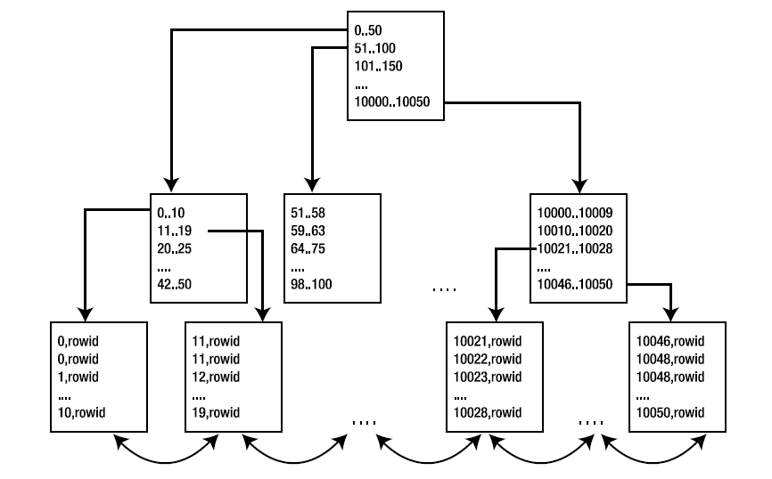
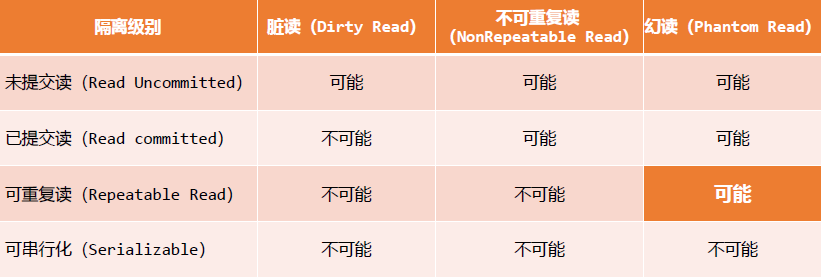
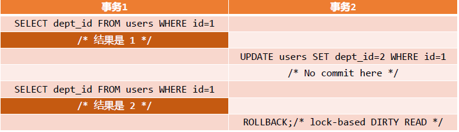
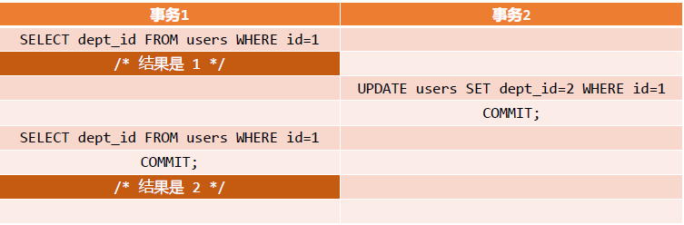
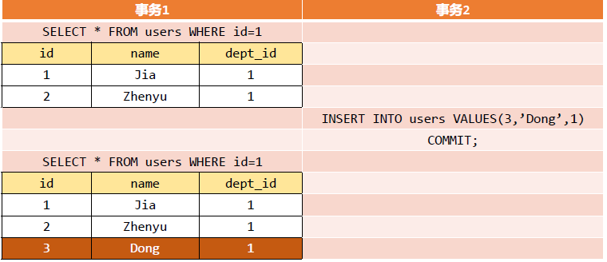
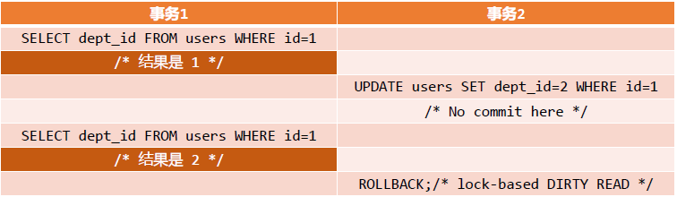
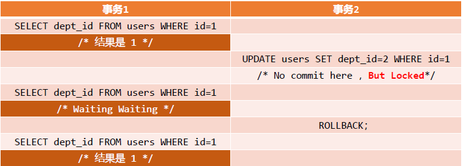

数据库开发
索引考一道
B+ Tree索引是大多DBMS缺省的索引类型，请详细描述以下几个问题:
B树索引的结构和使用方式
结构(画图):

- 由根指向子节点。b树将索引按顺序存储，在叶节点保存索引到字段及其对应数据在表中的位置指针。叶节点之间连续。
使用方式:
- 从根节点开始搜索，通过节点中的指针进入下一级节点，通过比较要查找的索引值和节点中的指针大小来选择进入哪个子节点,最终要么找到对应叶节点，要么没找到。叶节点中有指向表中数据的指针。
何时该使用B树索引，并分别说明原因;并详细说明为什么系统的为外键构建索引是普遍的要求
何时使用:
- 当仅需要索引访问表中很少一部分的行时。索引提供以原子粒度访问数据的功能，可以快速定位所需数据的位置。
- 虽然查询行数比较多，当索引包含多个字段，而要访问的字段全部包含在索引中时,查询只需通过索引而不用访问全表时。
为何普遍要为外键加索引:
- 为确保数据的完整性，在对主表操作时，需要对参照表进行加锁操作。如果外键没有索引，查找子记录就很慢，且参照表被锁的时间会很长，进而使很多更改操作阻塞。甚至可能发生死锁。
针对2有没有例外情况?如果有请简要说明理由
不需要为外键加索引的例外情况
- 被参照表很少被修改，或只在某段没有其他活动的时候进行修改操作，则不一定需要为外键加索引。盲目为外键加索引还可能造成索引重复。
B+树索引能做什么,不能做什么,为什么
能做什么
- 全键值
- 键值范围
- 键前缀查找
不能做什么
- %前缀的like查询
为什么
- 上级结点的元素会在下级结点中出现
- %替换任意字符，索引照第一个字符查询
索引为何会失效，在什么时候会失效
- 有or必全有索引;
- 复合索引未用左列字段;
- like以%开头;
- 需要类型转换;
- where中索引列有运算;
- where中索引列使用了函数;
- 如果mysql觉得全表扫描更快时（数据少）;
使用索引降低效率举例：
- 使用
SELECT COUNT(*) FROM T，并且T上有索引，但是优化器仍然全表扫描 - 对于一个有索引的列，做函数查询
- 使用
写出你所知道的其他索引，说明含义和用途、特点
- HASH索引
- 基于哈希表实现，只有精确匹配索引所有列的查询才有效。
- 索引组织表索引
- 以主键排序的方式将索引组织表的数据存储在B树索引结构中。索引结构中的每个叶块都存储关键字列和非关键列。
- 分区索引
- 分区索引(或索引分区)主要是针对分区表而言的。在获取所需数据时，只需要访问更小的索引片断(块)即可实现。
- 位图连接索引
- 建立在两个或更多表的连接之上的位图索引。 对于表列中的每个值，索引存储被索引表中的相应行的ROWID。
- 位图索引
- 适用于决策支持系统和数据仓库
- 反转键索引
- 如果数据以反转键索引存储，这些数据的值就会与原先存储的数值相反。这样，数据1234、1235和1236就被存储成4321、5321和6321。结果就是索引会为每次新插入的行更新不同的索引块。
- 磁盘容量有限，同时还要执行大量的有序载入，就可以使用反转键索引。
- 函数索引
- 它基于对表中列进行计算后的结果创建索引。 函数索引在不修改应用程序的逻辑基础上提高了查询性能。
- HASH索引
InnoDB和MyISAM保存索引的方式如何影响性能
- MyISAM使用前缀压缩以减少索引，而InnoDB不会压缩索引
- MyISAM完全保存索引块中第一个值，然后将其他值和第一个值进行比较得到相同前缀的字节数和剩余的不同的后缀部分存储起来。如第一个索引是perform，那么索引performance存储为7ance
- 使用了更少的空间，但代价是更慢的操作，因为每个值的压缩前缀都依赖于前面的值
- 无法使用二分法查找，只能从头开始
- MyISAM索引按照行存储的物理位置引用被索引的行，但是InnoDB按照主键值引用行
- InnoDB：与主键顺序相关的查询和插入的效率会提高
- MyISAM：与物理存储顺序相关的查询和插入的效率会提高
- MyISAM使用前缀压缩以减少索引，而InnoDB不会压缩索引
自增字段，并发相关
如何实现自增字段
MySQL
- 通过 AUTO_INCREMENT 属性定义自增字段
Oracle
- 使用标识列（IDENTITY），需要使用 Oracle 12c 以上版本；
- 使用序列（SEQUENCE）。
该不该用一个毫无意义的id或者自增字段来作为主键，没有意义带来什么，写个人理解
该不该，该
InnoDB引擎使用聚集索引，数据记录本身被存于主索引（一颗B+Tree）的叶子节点上。这就要求同一个叶子节点内（大小为一个内存页或磁盘页）的各条数据记录按主键顺序存放，因此每当有一条新的记录插入时，MySQL会根据其主键将其插入适当的节点和位置，如果页面达到装载因子（InnoDB默认为15/16），则开辟一个新的页（节点）
如果表使用自增主键，那么每次插入新的记录，记录就会顺序添加到当前索引节点的后续位置，当一页写满，就会自动开辟一个新的页。
- 这样就会形成一个紧凑的索引结构，近似顺序填满。由于每次插入时也不需要移动已有数据，因此效率很高，也不会增加很多开销在维护索引上。
如果使用非自增主键（如果身份证号或学号等），由于每次插入主键的值近似于随机，因此每次新纪录都要被插到现有索引页得中间某个位置
- 此时MySQL不得不为了将新记录插到合适位置而移动数据，甚至目标页面可能已经被回写到磁盘上而从缓存中清掉，此时又要从磁盘上读回来，这增加了很多开销，同时频繁的移动、分页操作造成了大量的碎片，得到了不够紧凑的索引结构，后续不得不通过OPTIMIZE TABLE来重建表并优化填充页面。
没有意义的自增字段会带来什么
- 拆分之后的比较效率较低
在并发中，关于最大值的优化
- 存放最大值的地方，用池子还是一个可选值，最大值本身都是资源竞争的焦点，读取最大值，锁住，更新最大值，释放，插入
- 生成池子的最大值，要锁表
- 使用反向键索引或者叫逆向索引，间隔大不会对某个节点进行竞争
- 使用哈希索引
insert资源（主键索引资源）竞争
- DBA解决方案
- 事务空间：控制块的大小
- 可用列表：控制块的数量
- 架构解决方案
- 分区：将压力分散，各个区的压力就会减少
- 逆序索引：解决在索引节点上的竞争
- 索引组织表：合并两个表，在该表发生冲突的概率是在两个表中发生冲突的概率的乘积
- 开发解决方案
- 调节并发数
- 不使用系统产生值：而使用大range随机值
- DBA解决方案
优化的问题 exsit in 标识过滤条件的方式 反范式
简述SQL的执行顺序
- 语法分析：判断一条SQL语句的语法是否符合SQL的规范
- 语义分析：语法正确的SQL语句的第二个步骤就是判断该SQL语句所访问的对象是否准确，且用户是否有相应的权限
- 解析
- 硬解析（在shared pool中找不到）：对提交的sql完全重新从头到尾进行解析
- 软解析：如果在shared pool中找到了与之完全相同的sql解析好的结果，进行软解析
- 根据解析产生的执行计划执行sql
- 执行引擎
- 存储引擎
- 数据库
exsit in 标识过滤条件的方式
- in语句：使用hash将外表与内表连接
- exists语句：对外表做loop循环，每次loop循环再对子表进行访问。
- in()是在内存里遍历比较,而exists()需要查询数据库，查询数据库所消耗的性能更高,而内存比较很快.
什么是反范式，判断何时使用反范式的条件，举例说明
什么是反范式：
- 适度的增加冗余，来提高查询速度。
判断何时使用反范式的条件
- 有一张存放商品的基本表。“金额”这个字段的存在，表明该表的设计不满足第三范式，因为“金额”可以由“单价”乘以“数量”得到，说明“金额”是冗余字段。但是，增加“金额”这个冗余字段，可以提高查询统计的速度，这就是以空间换时间的作法。
- 数据列和计算列
打破范式的模式
- 合并1对1关系
- 在1对多关系中，把非键属性重复以减少JOIN操作
- 在1对多关系中，把外键属性重复以减少JOIN操作
- 在多对多关系中，把属性重复以减少JOIN操作
- 引入重复组
- 提取新的表
- 分割表
exist in 在哪个起点进行优化
- IN适合于外表大而内表小的情况，即外层条件不好；EXISTS适合于外表小而内表大的情况，即外层条件好
- 用exist的话 是主查询每读取一条记录，然后去子查询临时表里找， 主查询数据量大，就会循环很多次
- 用in就直接拿子查询结果集，走大表索引
优化器的有效范围
- 优化器需要借助数据库中找到的信息
- 能够进行数学意义上的等价变换
- 优化器考虑整体响应时间
- 优化器改善的是独立的查询
如何判断过滤条件的好坏
- 最终需要的数据是什么，来自哪些表
- 哪些输入值会传递到 DBMS 引擎
- 能过滤掉不想要的数据的条件有哪些
- 高效过滤条件是查询的主要驱动力
优化的方式
- 挑选最好的过滤条件
- 基本原则：找到分辨率最强的条件
- 避免在最高层使用distinct
- 尽量使用非关联子查询
- 降低连接数量
- 改写sql
- 反范式设计
- 挑选最好的过滤条件
为了提高数据库效率，从不同角度简述有哪些优化措施
- 读写分离，垂直拆分，水平拆分
- 建立索引，数据分区
- 合理配置数据库
- 优化sql语句，避免全表扫描
- 使用表变量代替临时表
数据库隔离级别

脏读
当一个事务读取到另外一个事务修改但未提交的数据时,就可能发生脏读。A事务读取B事务尚未提交的数据，此时如果B事务发生错误并执行回滚操作，那么A事务读取到的数据就是脏数据。

不可重复读
在当执行 SELECT 操作时没有获得读锁或SELECT 操作执行完后马上释放了读锁； 另外一个事务对数据进行了更新读到了不同的结果。前后多次读取，数据内容不一致。

幻读
- 是不可重复读的一种特殊场景，前后多次读取，数据总量不一致。
- 当事务 1 两次执行 ‘’SELECT … 检索一定范围内数据的操作中间
- 事务2在这个表中创建了(如[[INSERT]]了一行新数据，这条新数据正好满足事务 1 的“WHERE” 子句。

区别
- 脏读：指读到了其他事务未提交的数据
- 不可重复读：读到了其他事务已提交的数据 （update）
- 不可重复读与幻读都是读到其他事务已提交的数据，但是它们针对点不同
- 不可重复读： update
- 解决：使用行级锁，锁定该行，事务A多次读取操作完成后才释放该锁，这个时候才允许其他事务更改刚才的数据。
- 幻读： delete insert
- 解决：使用表级锁，锁定整张表，事务A多次读取数据总量之后才释放该锁，这个时候才允许其他事务新增数据。
- 不可重复读： update
四种隔离级别
未提交读( READ UNCOMMITTED)
- 未提交读(READ UNCOMMITTED)是最低的隔离级别，在这种隔离级别下，如果一个事务已经开始写数据，则另外一个事务则不允许同时进行写操作,但允许其他事务读此行数据。

已提交读(READ COMMITTED)
- 读取数据的事务允许其他事务继续访问该行数据，但是未提交的写事务将会禁止其他事务访问该行，会对该写锁一直保持直到事务提交。
- 能解决脏读的问题，却防不了不可重复读的问题。

可重复读(REPEATABLE READS)
- 是介于已提交读和可串行化之间的一种隔离级别，它是InnoDb的默认隔离级别。
可串行化(Serializable )
- 可串行化(Serializable )是高的隔离级别，它求在选定对象上的读锁和写锁保持直到事务结束后才能释放，所以能防住上诉所有问题，但因为是串行化的，所以效率较低。
可重复读(REPEATABLE READS)的隔离级别在InnoDB下如何有效的防止脏读、幻读
- SELECT时，读取创建版本号<=当前事务版本号,删除版本号为空或>当前事务版本号。
- INSERT时，保存当前事务版本号为行的创建版本号
- DELETE时，保存当前事务版本号为行的删除版本号
- UPDATE时，插入一条新纪录，保存当前事务版本号为行创建版本号，同时保存当前事务版本号到原来删除的行
代码题 第一问复杂 最后简单 累加数据段
题目1：
某商场部分关系模式如下：
| 表 | 字段 |
|---|---|
| 店铺表 | store(store_ id, store_ name, store_ floor, room_ no) |
| 商品表 | commodity(com_id, com_name, com_ price, store_id) |
| 销售员表 | saler(saler_id, saler_name, saler_ gender, saler_ age, store_id) |
| 流水账单表 | bill(bill_id,saler_ id, com_id, purchase _quantity, total_price, bill_time) |
其中，店铺表记录了该商场入驻的店铺信息，商品为每个店铺中销售的商品信息，销售员为店铺中的工作人员，流水账单表为为商场收银台交易的纪录，bill_time 交易发生的时间，为datetime 类型，每个流水账单只包含了一种商品，不同类商品为不同的账单，purchase_quantity 数量为正整数。
在生成账单记录时，total_price 是由传入的com_id 和purchase_quantity查询到相关的单价以及数量计算出来的，请完成这样一条插入。
输入的传参为:bill _id, :saler, _id, :com_ id, :purchase_ quantity, :bill_time, 而字段total_price 需要计算得出。参考SQL语句如下: insert into bill(bll_id, saler_id, com_id, purchase_quantity, total_price, bill_time) values (:bill_id, :saler_id, :com_id, :purchase_quantity, :purchase_quantity*(select com_ price from commodity where com_id = :com_id), :bill _time)A店铺的老板想要了解一下店铺员工每天的销售业绩，请查询store_id 为”MCS_A”的店铺里的所有员工在2015年11月11日的完成的交易笔数，以及每个员工完成的总交易额。
select s.saler_id,s.saler_name,count(bill_id) as bill_count,sum(total_price) as bill_total from saler s, bill b where s.store_id = "MSC_A" and s.saler_id = b.saler_id and date_format(bill_time,"%Y-%m-%d")="2015-11-11" union select saler_id,saler_name,0 as bill_count,0 as bill_total from saler where store_id = "MCS_A" and saler_id not in( select saler_id from bill where date_format(bill_time,"%Y-%m-%d")="2015-11-11" );商场的管理人员想了解2015年11月11日哪个店铺的交易额最大，查询其店铺名称，店铺所在楼层，店铺编号以及当天的交易额。
select t.store_id,t.store_name,t.store_floor,t.room_no,sum(total_price) from store t,saler s,bill b where t.store_id = s.store_id and s.saler_id = b.saler_id and data_format(bill_time,"%Y-%m-%d")="2015-11-11" group by t.store_id limit 0,1;
主观题
关系数据库、数据仓库、NoSQL的发展演化和内在联系是什么样的？
- 关系模型是在1970年由IBM的研究员E.F.Codd博士首先提出的，在之后的几十年中，关系模型的概念得到了充分的发展并逐渐成为主流数据库结构的主流模型。简单来说，关系模型指的就是二维表格模型，而一个关系型数据库就是由二维表及其之间的联系所组成的一个数据组织。
- NoSQL一词首先是Carlo Strozzi在1998年提出来的，指的是他开发的一个没有SQL功能，轻量级的，开源的关系型数据库。2009年初，Johan Oskarsson举办了一场关于开源分布式数据库的讨论，Eric Evans在这次讨论中再次提出了NoSQL一词，用于指代那些非关系型的，分布式的，且一般不保证遵循ACID原则的数据存储系统。
- 关系数据库的另一个特点就是其具有固定的表结构，因此，其扩展性极差。于是，非关系型数据库应运而生，由于不可能用一种数据结构化存储应付所有的新的需求。非关系型数据库严格上不是一种数据库，应该是一种数据结构化存储方法的集合。
- 必须强调的是，数据的持久存储，尤其是海量数据的持久存储，还是需要一种关系数据库这员老将。
- 数据仓库 ，由数据仓库之父比尔·恩门（Bill Inmon）于1990年提出，主要功能仍是将组织透过资讯系统之联机事务处理(OLTP)经年累月所累积的大量资料，透过数据仓库理论所特有的资料储存架构，做有系统的分析整理，以利各种分析方法如联机分析处理(OLAP)、数据挖掘(Data Mining)之进行，并进而支持如决策支持系统(DSS)、主管资讯系统(EIS)之创建，帮助决策者能快速有效的自大量资料中，分析出有价值的资讯，以利决策拟定及快速回应外在环境变动，帮助建构商业智能(BI)。
本学期的课程中你印象最深的知识点是什么？为什么？
索引？为了寻求快捷便利建立过多的索引对于下一届接手的程序员是不友好的。